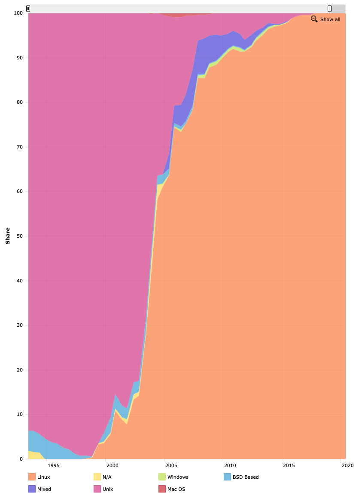
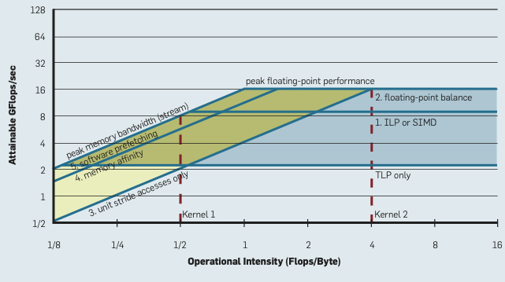
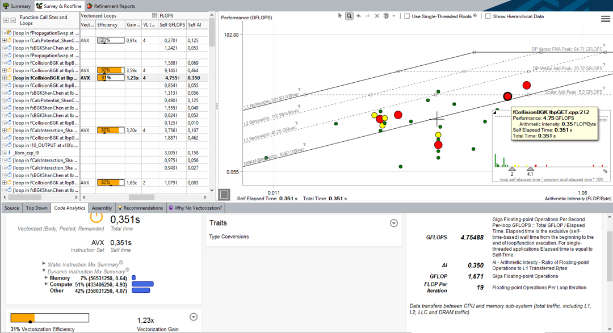

3. Management and Measurement of Distributed Systems
Overview
In this Unit we’re going to cover:
- Operating systems on distributed systems
- The software environment
- Compilers
- Libraries
- Environment modules
- Scheduling
- Performance measurement
- Performance analysis
Operating Systems
A Brief History
Early HPC systems were very different to workstations of the time and therefore usually required specialised operating systems that could control the many interconnected systems.
The CDC6600 used its own Chippewa Operating System (so named after Chippewa Falls, where the machine was developed). Chippewa OS was a simple job control oriented operating system.
When the first Cray-1 was installed at the Los Alamos National Laboratory (LANL), it was delivered without any software or OS. Instead, LANL developed the Cray Time Sharing System (CTSS) in conjunction with the Lawrence Livermore National Laboratory (LLNL). CTSS was popular on Cray systems across the United States Department of Energy (DoE).
Alongside CTSS, Cray also developed their own Cray Operating System (COS) in 1975. COS was used on both the Cray-1 and Cray X-MP supercomputers, and, like CTSS, was a batch oriented operating system.
COS was ultimately succeeded by UNICOS during the 1980s. UNICOS was a Unix-based operating system specifically developed by Cray for their supercomputers. The OS was based on the UNIX System V OS, and had a number of features (such as networking) added from the Berkeley Software Distribution (BSD).
During the 1980s, almost all supercomputers began adopting Unix-like operating systems. In 1993, the first TOP500 list contained 491 systems using variants of Unix (e.g. UNICOS, BSD, CMOST, etc.), and only the 9 NEC machines were not.

Figure 1: Operating system share of TOP500 since 1993
In 1991, frustrated by the licensing of some Unix operating systems, Linus Torvalds began developing an open source Unix-like operating system called Linux. While many initially believed the rapid development of Linux would render it impractical for large HPC systems, over the last 30 years it has grown in popularity on distributed systems. Since 2018, Linux distributions are now used on all of the TOP500 systems.
Further Reading
- Gerofi B., Ishikawa Y., Riesen R., Wisniewski R.W. (2019) Introduction to HPC Operating Systems. In: Operating Systems for Supercomputers and High Performance Computing. High-Performance Computing Series, vol 1. Springer, Singapore.
Modern Approaches
The adoption of commodity hardware in most modern HPC systems means that, today, most systems use a relatively conventional Linux distribution. The most popular distributions in use are typically provided by vendors such as RedHat or SUSE, or supported by internal developers (as is the case with the Tri-Laboratory Operating System Stack, or TOSS, developed at LLNL, based heavily on the RedHat Enterprise Linux distribution).
Although most systems (or perhaps even, all!) use a commodity Linux installation, there are a number of instances where compute nodes and login nodes use different Linux kernels, with compute nodes occasionally favouring a lightweight kernel (LWK) – such that the kernel implements only a crucial subset of a full Linux kernel to minimise OS overhead and jitter.
Two examples of using LWKs can be seen in IBM’s BlueGene systems and Cray systems.
On the BlueGene platforms, each compute node uses an LWK known as CNK – or Compute Node Kernel. CNK forces applications to use statically mapped physical memory, and does not provide context switching, meaning it can only run a single application for a single user at any given time. Furthermore, CNK does not implement file I/O, instead delegating I/O operations to dedicated I/O nodes (running the I/O Node Kernel – or INK). Consequently, CNK is implemented in about 5000 lines of C++ code and results in far less OS jitter on the compute nodes.
Similarly, most Cray systems have a LWK on the compute nodes known as CNL (Compute Node Linux). Rather than a fully custom Linux Kernel like with BlueGene, CNL is a stripped-back SUSE Linux Kernel with many daemons removed to reduce background OS noise.
Further Reading
- M. Giampapa, T. Gooding, T. Inglett and R. W. Wisniewski, “Experiences with a Lightweight Supercomputer Kernel: Lessons Learned from Blue Gene’s CNK,” SC’10: Proceedings of the 2010 ACM/IEEE International Conference for High Performance Computing, Networking, Storage and Analysis, 2010, pp. 1-10, doi: 10.1109/SC.2010.22.
One thing that is important to note, is that since most distributed systems use Linux, you will need to be familiar with using Linux. It is also rare that a graphical user interface is provided for interacting with a distributed system, and so you will likely need to be proficient with using a Linux command line. To use most HPC systems you will likely need a basic familiarity with:
- Navigating a Linux directory structure (e.g.
cd,pwd,ls)- Using a terminal-based text editor (e.g.
nano,vim)- Manipulating files and permissions (e.g.
cat,chmod,chown,less)- Compiling software from source (e.g.
make,gcc)- Remotely accessing systems (e.g.
ssh,sftp,scp)You may wish to use some of your time in the labs to polish some of these skills – they will help later in the module.
The Software Environment
As you might imagine, scientific software is often very complex! To reduce some of this burden and increase developer productivity, there are a number of software solutions and software libraries that provide common tools and functionality to scientific programmers.
However, using third-party software or libraries also comes with some associated complexity.
- Software and libraries used on large distributed systems must be kept up-to-date in lockstep with every node on the system.
- Multiple implementations or versions of each libraries must be maintained to provide compatibility with other libraries and applications.
The first issue is often handled by an administrator using system software (like apt, yum, etc.) to update software using pre-packaged binaries. The second issue is more difficult and often requires maintaining multiple installations of each library on the same system, with access to the different versions controlled by some of the typical environment variables on a Linux system.
One approach to both of these issues is to use an HPC-specific package manager, such as Spack. Spack was developed at the Lawrence Livermore National Laboratory and can be used to install scientific software and libraries along with associated dependencies. It is also capable of maintaining multiple versions of each library through environment modules.
It is not necessarily expected that you manipulate your own compute environment through environment variables; but it is probably useful to have an understanding of what some of the following environmental variables do:
C_INCLUDE_PATHLD_LIBRARY_PATHLIBRARY_PATHPATHMANPATHThis is just a small set of some of the variables you might encounter while compiling software on a distributed system (or, in some cases, just on a Linux system). Luckily, as we’ll soon see, we shouldn’t have to worry about this too much – assuming everything is set up correctly!
Compilers
Perhaps the most important tool you’ll encounter as a developer on a Linux system, and certainly as a developer on any distributed system, is the compiler (or, more likely, the compilers).
As you should be aware, a compiler is an application that translates a computer program (written in a programming language) into another language (usually machine code for execution). The history of compiler development and the history of scientific computing very much go hand-in-hand, with the first high-level language compiler being a Fortran compiler developed in 1957 by IBM. Although the Fortran programming language has dominated scientific computing for much of the past 65 years, this module will focus primarily on C/C++ programming (many physicists still write software in Fortran today, while computer scientists tend to use C and C++).
On most modern Linux systems there is a wide variety of compilers for C and C++, and each of them have certain advantages and disadvantages. Here we will cover two compilers commonly found on HPC systems.
GCC
The GNU Compiler Collection (GCC) is perhaps the most widely used compiler on Linux systems – and consequently is included as the default compiler on most Linux distributions. GCC has been continuously developed for 35 years, and while it was initially developed as a C compiler, it can now compile a wide variety of programming languages, and can target an array of processor architectures.
Additionally, GCC supports many of the programming models used in HPC application development, such as OpenMP and OpenACC. You can find out more about GCC from its manual page.
$ man gcc
Further Reading
LLVM Clang
The LLVM project began in 2000, initially as a low-level virtual machine (hence LLVM) to investigate dynamic compilation techniques and dynamic programming languages. Since then, it has evolved into an umbrella project that encompasses an Intermediate Representation (IR) language, a debugger, and a number of compiler front ends (and much more). It has been adopted by Apple as part of their Xcode development tools, and is also commonly found alongside GCC on many Linux systems.
Much of the LLVM implementation is written in C++, and is purposely language-agnostic. Instead, a frontend compiler emits LLVM IR, which LLVM can optimise and convert to machine-dependent assembly for execution. Because of this, LLVM currently contains support for over 30 languages.
The C-language frontend to LLVM is known as Clang, and it is capable of compiling C, C++ and Objective-C, and also supports the OpenMP, OpenCL, CUDA, and HIP language frameworks. Clang is designed to be a drop-in replacement for GCC, and so supports many of the same compilation flags.
Such is the success of LLVM/Clang, that in recent years it has been forked by AMD, Intel, and Cray for their compiler environments.
Exercise
The Compiler Explorer is a useful website to see how different compilers perform at compiling simple applications.
Write a simple hello world application in C (or something similarly simple) and use the compiler explorer to see how different compilers perform.
You can also add command line options (like optimisation level
-O1,-O2,-O3, etc.) and see how the assembly generated changes.
Software Libraries
Alongside the compiler, another important consideration when developing scientific software is dependencies – libraries with functionality that is common to many applications. In this section, we’ll partition these software libraries into two categories, for ease.
Communication Libraries
On a distributed system, applications running in parallel across a system often need to be able to communicate with one another to coordinate execution. Since most systems today are distributed memory systems, there must be some way to pass data between compute nodes either implicitly (through a global address space) or explicitly (through message passing).
The Partitioned Global Address Space (PGAS) parallel programming paradigm essentially mimics a shared memory system, by providing a distributed application with a globally coherent memory space that is transparently partitioned among compute nodes. When compute is being performed on a partition that is local to a compute node it can exploit locality of reference to act directly on the memory; when data is required that is not local, it must be requested from another compute node, thus requiring a communication step.
Notable examples of a PGAS memory model can be found in Coarray Fortran, Unified Parallel C and Chapel. Since Fortran 2008, Coarray Fortran has been integrated into the language.
In contrast to the implicit communication in a PGAS model, Message Passing uses explicit communication to coordinate applications running in parallel. The Message Passing Interface, or MPI, is the de facto standard in HPC.
MPI was first devised in 1991, with the first standard published at the Supercomputing conference in 1993. It has been continually developed ever since, and is extensively used on almost every HPC system today. The MPI standard defines an API (application programming interface) that includes communicators, point-to-point messaging, collective operations, derived data types, and parallel file I/O. There are a number of implementations available, including OpenMPI (not to be confused with OpenMP!), MPICH, Intel MPI, and IBM MPI, to name just a few, and there are API bindings available in C, C++, and Fortran.
We’ll look more closely at MPI later in this module.
Mathematical Libraries
There are numerous common algorithms that are used in many scientific software applications. For this reason, there are a number of mathematical libraries that provide an interface for solving common mathematical problems.
The basis of many of these libraries is BLAS (Basic Linear Algebra Subprograms), first developed in 1979. BLAS provides vector operations, matrix-vector operations, and matrix-matrix operations. LAPACK (Linear Algebra Package) builds on BLAS and provides routines for solving systems of linear equations. The FFTW library provides functions for computing discrete Fourier transforms, and is known to be the fastest free software implementation of the fast Fourier transform (FFT).
Architecture-tuned implementations of BLAS, LAPACK, and FFTW are often available, with notable examples being AMD Optimized CPU Libraries, ARM Performance Libraries, Intel Math Kernel Library, cuBLAS, clBLAS, OpenBLAS, and Boost.uBLAS.
In addition to libraries such as BLAS and LAPACK, there are a multitude of libraries that build on these to perform increasingly complex mathematical algorithms. For example: the Portable, Extensible Toolkit for Scientific Computation (PETSc) provides a number of data structures and routines for solving partial differential equations (PDEs); HYPRE is a library of data structures, preconditioners, and solvers developed at the Lawrence Livermore National Laboratory; and Trilinos is an extensive collection of open-source libraries, developed by Sandia National Laboratories, that provides a large number of packages for solving linear systems, preconditioning, and using sparse graphs and matrices.
Making use of these third-party implementations has the advantage that it reduces programmer effort, and means that many applications can benefit from performance optimisation made in a single place. Importantly, there is often no need to reinvent the wheel!
Environment Modules
Earlier, we briefly encountered some of the environment variables that we can manipulate to force an application to compile or link against different versions of a library. On a system where there are many opposing versions of libraries, this can become incredibly difficult to manage effectively.
Luckily, there is a simple solution to control the programming environment that is present on most distributed systems (and some non-distributed systems too!).
The Environment Modules system is a tool to help Unix and Linux users manage their shell environment through the loading and unloading of module files that can set and unset groups of environment variables.
There are two major implementations of Environment Modules, namely Environment Modules (installed on, but not really used on, many CS workstations and servers) and Lmod (installed on York’s Viking cluster). Luckily both function similarly, with their main differences existing in the format of module files.
Using the module command, certain applications and libraries can be loaded into the shell environment (through manipulating environment variables), ensuring that applications find and use specific versions of external libraries. You should explore the module command on Viking to see what compilers, tools, and libraries may be available for use.
The most important commands are avail, spider, list, load, and unload. On Viking, you’ll notice that there are numerous compilers available, and many different versions of each compiler.
$ module avail
---------------------------------------------- /opt/apps/eb/modules/base ----------------------------------------------
PSM2/12.0.1
---------------------------------------------- /opt/apps/eb/modules/bio -----------------------------------------------
ADMIXTURE/1.3.0 PLINK/2.00a2.3-GCC-10.3.0
AMPHORA2/20190730-gompi-2020b-Java-13-pthreads-avx2 PoolHapX/2020-03-29-foss-2019b-Java-11
ARAGORN/1.2.41-foss-2019b ProFit/3.3-GCC-10.3.0
ARAGORN/1.2.41-foss-2020a Proteinortho/6.0.27-foss-2020a-Python-3.8.2
ARAGORN/1.2.41-foss-2021b (D) Pysam/0.15.3-GCC-8.3.0
AUGUSTUS/3.3.3-foss-2020a Pysam/0.16.0.1-GCC-8.3.0
AUGUSTUS/3.4.0-foss-2020b (D) Pysam/0.16.0.1-GCC-9.3.0
AdapterRemoval/2.2.1-foss-2019b Pysam/0.16.0.1-GCC-10.2.0
AdapterRemoval/2.3.2-GCC-10.3.0 (D) Pysam/0.16.0.1-GCC-10.3.0
AdapterRemovalFixPrefix/0.0.5-Java-1.8 Pysam/0.17.0-GCC-11.2.0
AdmixTools/7.0-foss-2019b-Perl-5.30.0-R-3.6.2 Pysam/0.19.1-GCC-11.3.0 (D)
AlphaFold/2.0.0-foss-2020b Qualimap/2.2.1-foss-2019b-R-3.6.2
... etc
Scheduling
Most modern day HPC clusters reserve a small number of nodes to provide users with an interface to the system. These nodes are commonly known as login nodes. Users typically use these nodes to write and compile software that is destined for parallel execution. However, running an application on a large parallel system is not as easy as just running the compiled binary from the terminal – doing so would only execute the application on the login node itself, and would likely annoy other users of the system.
Instead, HPC clusters employ a job scheduler to manage their compute resources.
Batch Queuing Systems
Of course, scheduling is an incredibly difficult problem – and has been the focus of research for decades!
But when a system has thousands of users competing for a limited resource, a batch queuing system is essential.
In using a scheduler, users typically express their job needs in a short script (written in shell script, or perhaps python). Users then submit this script to the scheduler along with a request for particular resources. The scheduler then processes items in the queue using a pre-configured scheduling algorithm to ensure that all users are given fair use of the system.
On York’s Viking cluster, the Slurm scheduler is used. Slurm was developed at Lawrence Livermore National Laboratory, and is used on around 60% of the TOP500 systems currently.
Further Reading
On any cluster system, perhaps the most important operations to be aware of are how to check the queue(s), submit jobs, check a job status, and cancel jobs.
Exercise
Use the Viking docs page, or the Slurm manual pages, to find out how to do each of the four tasks above. You might like to try each command out.
Besides Slurm, there are a number of other queuing and scheduling systems, with notable examples being Maui, PBS Pro, and IBM LoadLeveler. While each system has its own semantics, the principles of a batch scheduling system are the same.
Further Reading
Examples using PBS Pro – Scheduling jobs
Performance Measurement
Much of this module is about Performance Engineering, i.e., applying various techniques to ensure the non-functional requirements for performance will be met.
In the first unit, we covered some of the fundamental laws of parallel computing (i.e. Amdahl’s, Gustafson’s), but these laws do not mean very much if we cannot accurately record or understand our performance. In this section we’ll look at a variety of ways to measure the performance of an application, with a view to analysing this data later.
Code Timers
The simplest way to measure performance is to time our application, or subsections thereof. The easiest way to do this on a Linux system is with the time command. The time command runs a specified application and then outputs timing statistics when the application terminates. For example (with a simple dd command),
$ time dd if=/dev/zero of=/dev/null bs=512k count=100000
100000+0 records in
100000+0 records out
52428800000 bytes (52 GB) copied, 2.57488 s, 20.4 GB/s
real 0m2.579s
user 0m0.075s
sys 0m2.498s
For very simple applications this may be sufficient, however in most cases we are not interested in the total runtime; instead we are interested in a subset of the runtime (i.e. a kernel/function of interest). Achieving this level of fidelity likely requires code instrumentation.
There are numerous ways to add timers to a C/C++ application, but we’ll cover just two here. Firstly, we could use the clock() function in <time.h>. clock() returns the number of clock ticks at a given point of execution, and so we can use it to count the number of clock ticks taken by a section of code, and then divide this by the defined CLOCKS_PER_SEC value. For example,
#include <time.h>
...
clock_t start, stop;
double duration;
start = clock();
//code
stop = clock(); // get number of ticks after loop
// calculate time taken for loop
duration = (double) ( stop - start ) / CLOCKS_PER_SEC;
Alternatively, we could use the clock_gettime() function to record the time at the start and end of a block of code. clock_gettime() fills in a timespec structure with the current time of day in seconds and nanoseconds. For example,
#include <time.h>
...
struct timespec start, stop;
double duration;
clock_gettime(CLOCK_MONOTONIC, &start);
// code
clock_gettime(CLOCK_MONOTONIC, &stop);
// calculate time taken for loop
duration = (double) ((stop.tv_sec * 1000000000 + stop.tv_nsec) - (start.tv_sec * 1000000000 + start.tv_nsec)) / 1000000000.0;
Different methods will provide different levels of fidelity (clock() will typically give an answer in microseconds, while clock_gettime() will provide nanosecond resolution), and different systems may support different methods. There is are platform independent methods provided by both OpenMP and the MPI standard, and we will cover these later in the module.
Exercise
Add some timers to your code. Try different timers out. Investigate other methods for timing C/C++ code.
Performance Counters
Alongside timing information, it might be that we want more performance data that is not directly related to time. For example, we might like to know exactly how many L1 cache misses there have been during an execution, or perhaps the number of floating-point operations that have been issued. Supplementary behaviour like this can help us when trying to diagnose poor performance – perhaps our application exhibits poor cache behaviour, causing each subsequent memory read to flush the cache to reload another piece of data.
Most systems contain Hardware Performance Counters – a set of special-purpose registers built into microprocessors to count hardware related activities within a system. These can be accessed through the perf command, or programmatically through the Performance Application Programming Interface, or PAPI.
To use the perf command (which is not installed on Viking), we run the application through its stat function, and specify which performance events we would like to capture. To get a list of available events, we can use:
$ perf list
We can then record performance using the stat function and specifying the counters using the -e event parameter. For example, to record the energy usage of an application:
$ perf stat -a -e "power/energy-ram/" -e "power/energy-cores/" -e "power/energy-pkg/" ./test.x
We can also instrument our code directly to capture events through the PAPI interface. You can load the PAPI library on Viking with:
$ module load PAPI/7.0.1-GCCcore-12.2.0
You can then see what performance counters are available using the papi_avail command.
$ papi_avail
...
================================================================================
PAPI Preset Events
================================================================================
Name Code Avail Deriv Description (Note)
PAPI_L1_DCM 0x80000000 Yes No Level 1 data cache misses
PAPI_L1_ICM 0x80000001 No No Level 1 instruction cache misses
PAPI_L2_DCM 0x80000002 Yes No Level 2 data cache misses
PAPI_L2_ICM 0x80000003 Yes No Level 2 instruction cache misses
PAPI_L3_DCM 0x80000004 No No Level 3 data cache misses
...
You can access and read these counters programatically through the PAPI library, and can therefore instrument portions of your application to count performance events of interest.
Firstly, you must include the PAPI header file, <papi.h>, and then you must compile and link against libpapi with:
$ gcc -lpapi test.c
You can read available counters (note above that some counters are not available on some systems) like so:
#include <papi.h>
...
PAPI_library_init(PAPI_VER_CURRENT);
int eventset = PAPI_NULL;
int return_value = 0;
return_value = PAPI_create_eventset(&eventset);
if (return_value != PAPI_OK) {
fprintf(stderr, "Error creating event set: %s\n", PAPI_strerror(return_value));
}
return_value = PAPI_add_named_event(eventset, "PAPI_L1_TCM");
if (return_value != PAPI_OK) {
fprintf(stderr, "Error adding named event L1 TCM: %s\n", PAPI_strerror(return_value));
}
return_value = PAPI_add_named_event(eventset, "PAPI_DP_OPS");
if (return_value != PAPI_OK) {
fprintf(stderr, "Error adding named event DP OPS: %s\n", PAPI_strerror(return_value));
}
long long int vals[2] = { 0, 0 };
PAPI_reset(eventset);
return_value = PAPI_start(eventset);
if (return_value != PAPI_OK) {
fprintf(stderr, "Error starting PAPI collection: %s\n", PAPI_strerror(return_value));
}
...
return_value = PAPI_stop(eventset, vals);
if (return_value != PAPI_OK) {
fprintf(stderr, "Error stopping PAPI collection: %s\n", PAPI_strerror(return_value));
}
printf("I counted: %lld L1 cache misses, and %lld double precision operations\n", vals[0], vals[1]);
PAPI counters, along with the timing information collected above can be invaluable in measuring and analysing the performance of parallel applications.
Exercise
Explore the PAPI library, and the counters available on your system, or perhaps on Viking (if PAPI isn’t available elsewhere). Instrument some code with PAPI counters, see what you can find out.
Performance Analysis
Now that we have a collection of tools at our disposal for collecting performance data, we can begin to analyse it for insights.
Code Profilers
Code profilers use timing information to generate a profile of an application’s execution, such that we can identify performance hot spots.
A profiler can provide timing statistics for each of the functions in an application in a (usually) lightweight manner. Rather than timing each individual instruction, they employ statistical sampling – while this many sacrifice some accuracy, it also reduces the overhead on the application, and thus avoids polluting performance data with frequent calls to a timing function.
The most widely available profiler on Linux systems is probably the GNU Profiler (gprof). To enable gprof profiling, you first compile the application with profiling enabled (the command line option to do this is the same between GCC and Clang).
$ gcc -pg test.c
When the application is subsequently run (e.g. ./a.out, note: if the executable file is named differently, its name must be specified to gprof), it will generate a profile in the gmon.out file. This file (and the original binary executable) are then opened by the gprof profiling tool. For example,
$ gcc -pg cfd_solver.c
$ ./a.out
$ gprof
Flat profile:
Each sample counts as 0.01 seconds.
% cumulative self self total
time seconds seconds calls Ts/call Ts/call name
96.09 1.46 1.46 lup_solve
1.97 1.49 0.03 v_momentum_predictor
0.66 1.50 0.01 corrector
0.66 1.51 0.01 lup_decompose
0.66 1.52 0.01 u_momentum_predictor
0.00 1.52 0.00 1 0.00 0.00 alloc_2d_matrix
...
gprof can be used to provide a breakdown of an application’s runtime, and can therefore potentially identify performance critical functions.
For parallel applications, running at scale, gprof is likely not sufficient. For this reason, there are a number of cluster-ready performance analysis tools – some of which are available on Viking.
Intel Advisor is one such tool that forms part of Intel’s oneAPI Base Toolkit. Advisor is a profiling toolkit that can measure and analyse the performance of an application, and can provide useful advice on how to improve performance through vectorisation, threading, memory use, and GPU utilisation.
Advisor has a GUI for running applications and analysing their performance, but on a remote cluster system this may be difficult. So instead, you can use a CLI version of the application to collect data for analysis offline.
On Viking you can load the package with:
$ module load Advisor/2023.2.0
$ source $EBROOTADVISOR/setvars.sh
You can then use Advisor on any application to collect performance statistics, and generate a report.
$ advisor --collect=survey --project-dir=./my_project -- ./my_project # collect survey data
$ advisor --report=survey --project-dir=./my_project # generate a survey report
Alternatively, you could load the project into the Advisor GUI, to explore performance more fully.
Further Reading
Roofline
Besides code profiling, one of the most important methods developed for analysing performance is the Roofline model.
Further Reading
- Samuel Williams, Andrew Waterman, and David Patterson. 2009. Roofline: an insightful visual performance model for multicore architectures. Commun. ACM 52, 4 (April 2009), 65-76.
Roofline is a visual heuristic model that allows developers to plot the performance of a kernel in terms of its operational intensity and its floating-point performance. These opposing axes allow us to reason about whether the performance of a kernel is being bound by the memory bandwidth available, or by the computational power available.
In a Roofline model, multiple ceilings can be plotted (e.g. maximum floating point performance, maximum performance without SIMD, etc.), alongside unit slops calculated based on the memory bandwidth of various memory subsystems (e.g. L1 bandwidth, L2 bandwidth, DRAM bandwidth). Figure 2 shows the calculated data from an AMD Opteron X2 (taken from the Roofline paper).

Figure 2: A Roofline model for an AMD Opteron X2
In the figure, peak performance is only attainable if thread-level and instruction-level parallelism are used – if a kernel is unable to use either, its performance will be bound by the lowest horizontal line. The computational intensity (i.e. how many FLOP/s are performed per byte of data moved from memory) will also dictate its performance. If an application runs at most 1 floating point operation per 4 bytes loaded, even with SIMD, ILP and TLP, the performance would be bound to 4 GFLOP/s (i.e. at most 25% of the peak performance available).
Importantly, a Roofline model is plotted using the maximum attainable values, and then a kernels performance can be plotted as a single point within the chart.
- If that point lies in the yellow region, we would say that the kernel is memory bound, and that memory optimisations are the most appropriate optimisations to try (e.g. improving caching behaviour, etc.);
- If the point lies in the blue region, we would say that the kernel is compute bound, and that compute optimisations are the most appropriate (e.g. better vectorisation, etc.);
- If the point lies in the green region, both types of optimisation might be applicable (and might shift the performance into one of the other regions).
Calculating and generating Roofline models may seem complex, but they are available in some analysis tools. For example, Intel Advisor (mentioned above) has a Roofline tool that will collect maximum figures, and will plot your application on a Roofline model.

Figure 3: Intel’s Roofline analysis tool
One of the important features of a Roofline model is that they are specific to a processor, and not to any particular application. Once you’ve generated a model for a CPU, you can plot any application on the same figure. You can even plot a basic Roofline model using only published performance data (i.e. calculated FLOP/s rate, peak L1, L2, and DRAM memory bandwidth).
Exercise
Try plotting a Roofline model for your own CPU. If you don’t know your peak FLOP/s, peak memory bandwidth etc, you could look them up through Google, or benchmark them (if you can find an appropriate benchmark (e.g. STREAM for memory)!).